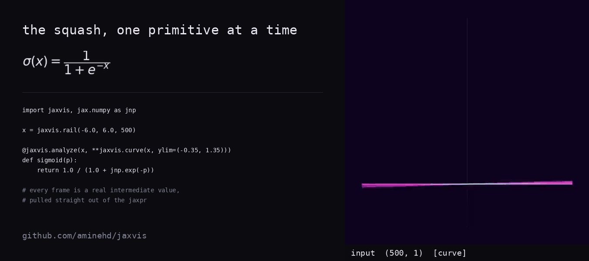
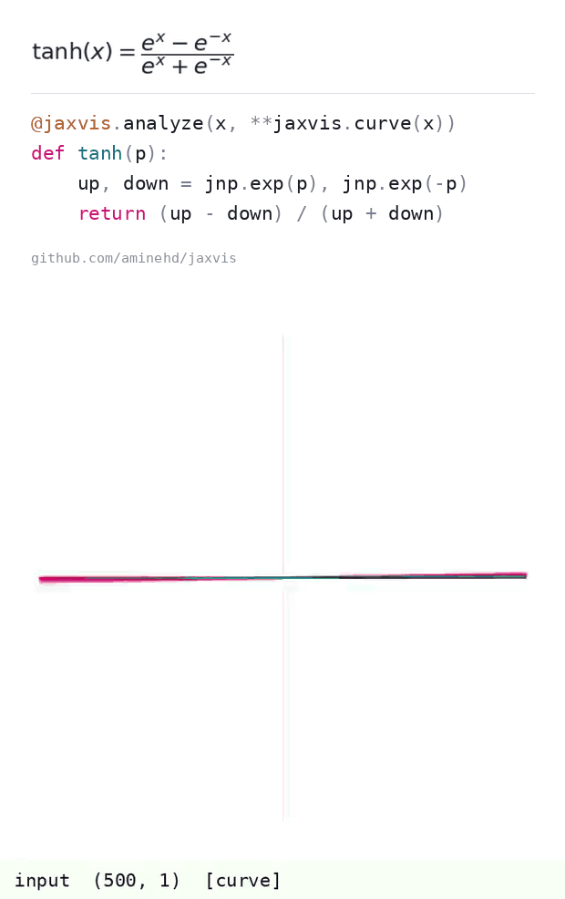
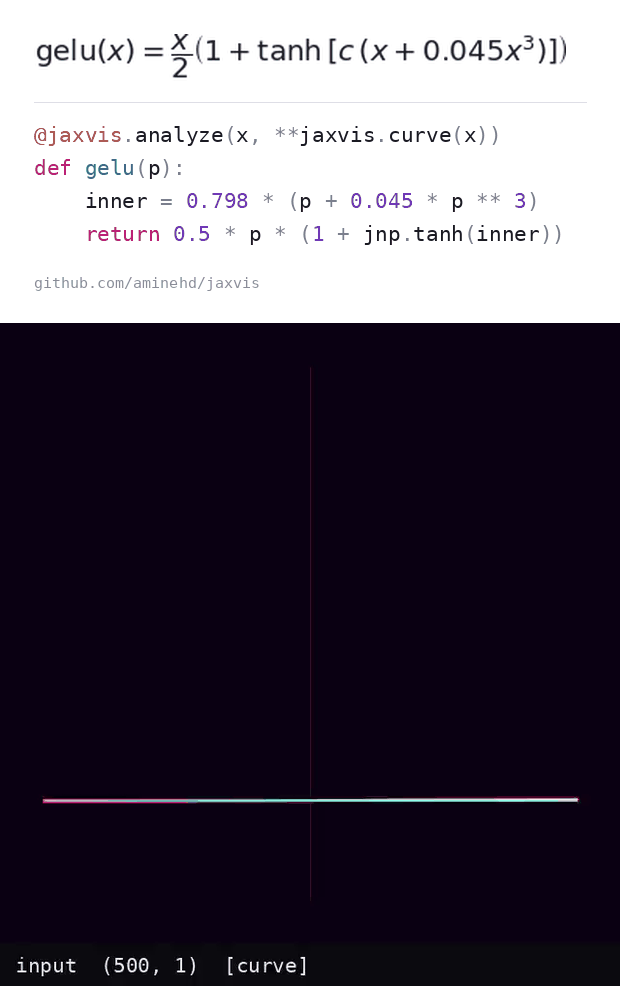
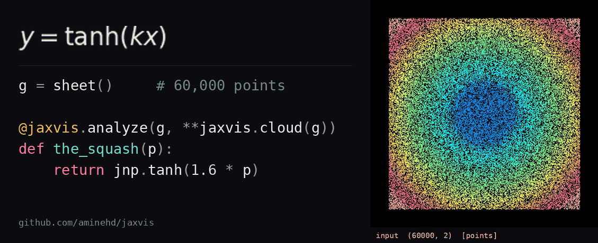
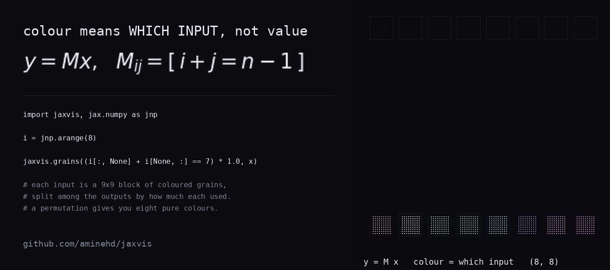

postcards
Each one carries the formula, the code and the clip, so it works
with no caption. Save the file and upload it directly — chat
apps inline a GIF but not a link.

the squash
sigmoid.gif

the same squash, centred
tanh.gif

a gate multiplied back onto x
gelu.gif

60,000 points, pressed into a square
cloud.gif

colour means which input, not value
provenance.gif